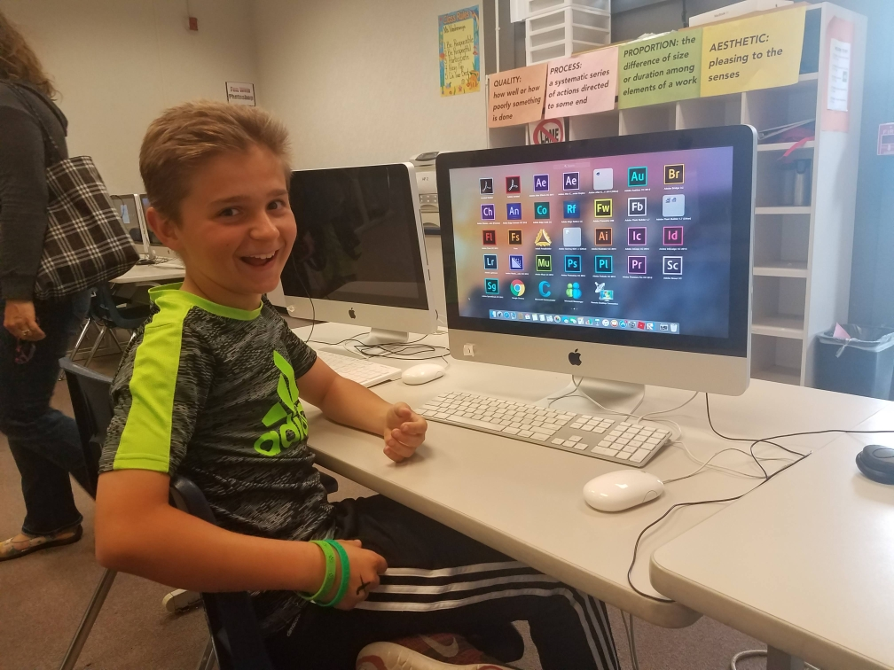

Howdy! My name is Mathias Miu and I am currently a Junior Computer Science major here at Texas A&M University! I am absolutely fascinated about the space of Computer Science and how technology dictates every second of the world around us now.
The ever increasing pace of advancement in the field of technology and computer science is something that has always attracted me and is something that I would love to be a part of! Be sure to read my background below the image of me and some of my best friends that I have made here at Texas A&M!
Being born in San Jose, CA, and raised throughout the San Francisco Bay Area, the field of Computer Science has been around my life from a very young age. Growing up, I was always fascinated how the things on my T.V. came to life, how the games I played were interactive and how technology that is so powerful got packed into such a small things such as our phones.
Alongside all my intrigue in the field from a young age, being able to go to Google's HQ in Mountain View, seeing Apple build Apple Park in Cupertino from scratch, visit Facebook's HQ in Palo Alto and so on, I was hooked.

Naturally, with my intrigue and all the extracurriculars around me to harbor and carry that passion through a young age, I knew I had to work in the field some way or another.
In middle school, I was determined to take the very first course possible for Computer Science, a small graphic and web development class. I actually managed to find a picture of myself shwoing my mom some of the programs that we used during the class at an open house at the end of that year which you can see on the right. Although it was only a basic course for middle schoolers, I saw all the endless opportunity to create whatever you wanted at your finger tips. Going into high school, I took all the AP Computer Science Courses that were offered.
Then, I applied as Computer Science major to all the universities and landed at my dream school at Texas A&M as a Computer Science Major!